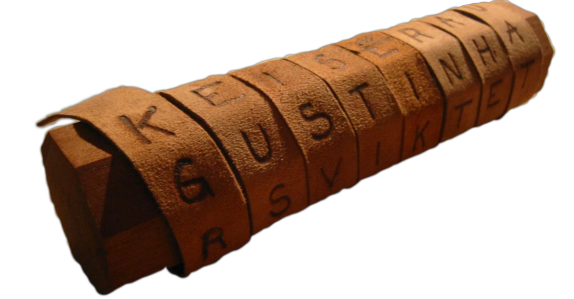
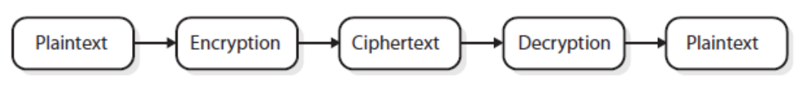
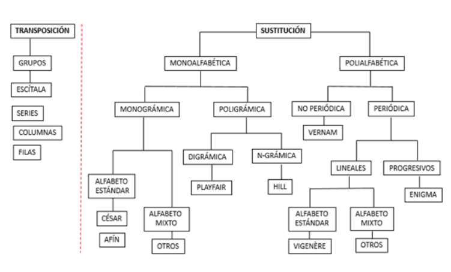
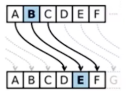
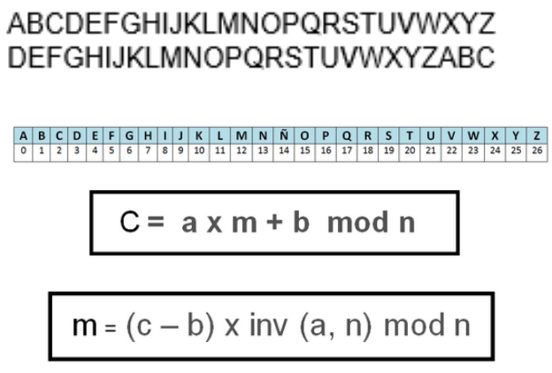
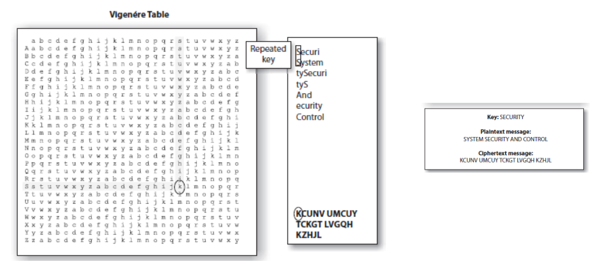
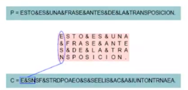

6.1.2 Criptografía clásica
1. Orígenes y objetivos
Los orígenes de la criptografía se remontan al siglo V a.d.C. con el artilugio conocido como escítala, que usaba un pueblo griego para proteger su información.

Figura 1. Una escítala.
Se extiende hasta después de la Segunda Guerra Mundial, con el surgimiento de la computación y los sistemas informáticos a mediados del siglo XX.
El objetivo básico de la criptografía clásica era encontrar sistemas que permitiesen hacer llegar a alguien determinada información considerada secreta, desde un lugar de origen a otro de destino, de forma tan segura que si esa información fuese interceptada por un tercero, no se pudiese reconocer el mensaje original.
Otro tanto podríamos decir en cuanto a almacenar dicha información secreta para un uso posterior, solamente por parte de quien o quienes posean una clave secreta para descifrarla.
Podemos decir que, la criptografia es el arte y la ciencia de crear un sistema criptográfico capaz de garantizar la seguridad de la información.
Por otro lado, el cifrado es el proceso de transformar un mensaje de forma que no pueda ser leído por nadie más que el remitente y el destinatario

Figura 2. Diagrama de bloques del cifrado.
2. Tipos de cifrado clásicos
Los cifrados clásicos suelen dividirse en cifrado por transposición y en cifrado por sustitución. No obstante, algunos cifrados clásicos contienen elementos tanto de la transposición como de la sustitución como la cifra VIC empleada por los espías soviéticos. [wikipedia]
1. Cifrado por sustitución
En un cifrado por sustitución, las letras (o grupos de letras) son sistemáticamente reemplazadas en el mensaje por otras letras (o grupos de letras). No necesariamente tienen que ser letra para codificar, con el primer número que se le ocurra, con 2 dígitos o más se puede crear un código inviolable, a menos, por su puesto que se sepa el número. [wikipedia]

Figura 3. Tipos de cifrado - Fuente: http://www.criptored.upm.es/
Enlaces
- http://www.criptored.upm.es/crypt4you/temas/criptografiaclasica/leccion6.html
http://www.criptored.upm.es/thoth/index.php - https://blog.segu-info.com.ar/2020/01/class4crypt-y-criptocert-videoclases-y.html
2.1 Cifrado Cesar y Afín
Sustitución César: Se aplica un desplazamiento constante igual a 3 caracteres sobre el texto a cifrar. Ejemplo: La letra 'B' será una 'E', la 'C' una 'F', etc.

Vídeo 1. Cifrado César.
Cifrado Afín: "También se le llama cifrado de transformación afín o cifrado monoalfabético genérico. Es un tipo de cifrado por sustitución en el que cada símbolo del alfabeto en claro (el alfabeto del texto en claro) es sustituido por un símbolo del alfabeto cifrado (el alfabeto del texto cifrado) siendo el número de símbolos del alfabeto en claro igual que el número de símbolos del alfabeto cifrado. Para hallar el símbolo del alfabeto cifrado que sustituye a un determinado símbolo del alfabeto en claro, se usa una función matemática afín en aritmética modular." Fuente wikipedia.

Cifrado Vigenére
Es un cifrado basado en diferentes series de caracteres o letras del cifrado César formando estos caracteres una tabla, llamada tabla de Vigenère, que se usa como clave. El cifrado de Vigenère es un cifrado por sustitución simple polialfabético. [Wikipedia]

Figura 4. Tabla Vigénere.
2.2 Transposición
Se reordenan los caracteres del texto en claro barajándolos siguiendo un esquema bien definido. Tipos:
- Grupos: Por medio de permutaciones.
- Series: Se ordena el mensaje como cadena de submensajes.
- Columnas/Filas.
- Chino.
Ejemplo Filas y columnas:

Obra publicada con Licencia Creative Commons Reconocimiento No comercial Compartir igual 4.0